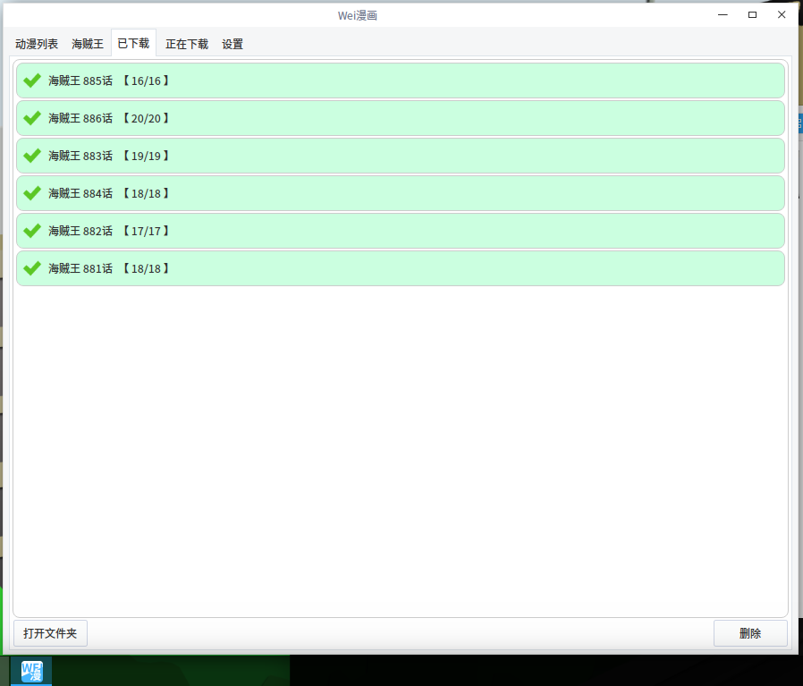

[11.29] 涅盘重生/死而复生/换汤换药/借壳上市/卷土重来/高举中华民族伟大复兴旗帜版wei漫画 V0.3
曾经的weimanhua因为爱漫画和漫画岛的关闭而顺势挂掉了，这次挖来fzdm和dmzj再次卷土重来。
源码：https://github.com/noahsai/weimanhua
=============
内嵌fzdm和DMZJ手机版，可以在线看（网页）也可以下载。
废话：帮别人下载HZW时写了个FZDM的脚本，既然写了就不想浪费，干脆做成GUI软件好了。但是FZDM的漫画比较少，所以找来了DMZJ的手机版，主界面直接套个浏览器算了，反正这两个网站本身都比较简单，我再用CSS手动去掉那些没用的东西和广告，更清爽了。
使用：
1.列表都可以鼠标拖动多选，ctrl、shift多选。
2.双击已完成的任务会用软件自带的看图打开图片，如果有问题就会用系统自带文管打开对应文件夹。
3.输入框用于输入fzdm和dmzj的漫画网址，但是两种情况：
①如果是dmzj手机版的单集网址将会立即下载该集（因为懒，反正没人用的）；
②如果是列表网址或fzdm/dmzj电脑版单集地址则会提供分集列表。
【注意1】不要登录DMZJ，我发现登陆后自带的浏览器就不能看DMZJ的漫画了，加上我并没有做cookie的保存。所以就别登录。
【注意2】虽然我已经尽力debug掉自己发现的问题了，但是以我的渣码水平，还是别暴力操作为好。
